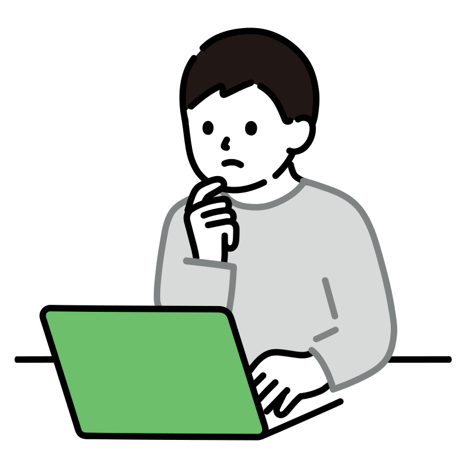

Pesquisa
Nesse menu eu organizo minha produção cientifica. O andamento da minha pesquisa e dissertação, pesquisas de iniciação científica e meu trabalho de conclusão de curso.
física - matemática - filosofia - sociedade
Embora a Física possa ser estudada como a Matemática Pura, não é como a Matemática Pura que a Física é importante.
- Bertrand Russell.

Além disso, todo aspirante a cientista como eu sabe [ou deveria saber] que ciência não se faz sozinho. Ela é construída com a contribuição direta e indireta de muitas pessoas. Com esse espírito, e influenciado pelo site do professor Derley Alves, o Resenha Sci-Fi, também resolvi escrever fora dos limites ocultos e bizarros das redes sociais. Junta-se a isso a motivação de criar um site que categoriza e divulga minhas contribuições científicas, o que aprenderei durante a jornada do mestrado e no doutorado e, é claro, minhas reflexões, posicionamentos políticos e afins.
O site também funciona como um portfólio, onde publico e comento minhas pesquisas acadêmicas atuais e revisito minha produção universitária. Caso haja interesse em discutir os temas aqui abordados, os meios de contato estão disponíveis para interlocução.
O site é organizado no menu lateral, que pode ser acessado clicando no ícone superior à esquerda. As principais categorias do site são:
Nesse menu eu organizo minha produção cientifica. O andamento da minha pesquisa e dissertação, pesquisas de iniciação científica e meu trabalho de conclusão de curso.
Nesse menu eu organizo toda minha produção tecnico-intelectual relacionada aos estudos: notas de aula, notas de estudo, materiais que produzi para monitorias, etc.
Nesse menu eu organizo tudo que produzi para apresentações orais, minicursos, posteres, etc.

Nesse menu eu organizo toda minha produção intelectual com um pouco mais de liberdade: textos sobre interpretações filosóficas da física e/ou matemática ensaios sobre a sociedade em geral e opiniões políticas.
Além disso, o menu lateral possui minhas redes sociais e uma página caso queira entrar em contato por email.
Sou Willian Bonner, ou melhor "Jimi", bacharel em Física pela UFS, com formação em física matemática. No TCC, explorei a dinâmica não-linear de lasers, identificando regimes caóticos via simulações em Python. Atualmente, meu foco está na interface entre Mecânica Quântica e Relatividade Geral.
.png)

Publicação do TCC aqui.

Publicação da minha última IC

A pensar...
Adoro conversar sobre física, matemática e ciências em geral! Se tiver dúvidas, perguntas, sugestões
Me acompanhe: